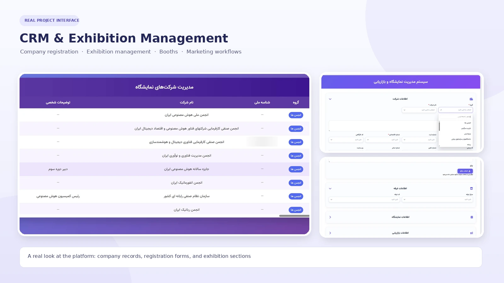

Full-Stack Automation · Data Systems · CRM
Exhibition CRM & Workflow Automation Engine
Designed and delivered a centralized CRM ecosystem for exhibition sales operations, combining a relational data model, n8n workflow automation, and a multi-role web portal for company records, contacts, booth allocation, and marketing follow-up.
CRM Panel Walkthrough
A product walkthrough showing the company registration workflow, exhibition management interface, data table, and key CRM interactions.
The video is provided as a portfolio demonstration. It may take a moment to load, depending on connection speed. Open video in a new tab
Project Overview
The project addressed fragmented exhibition-sales records that were maintained in separate local spreadsheets. The solution brought company and contact information, exhibition participation, booth requirements, and marketing interactions into a shared system with structured data, automated validation, and role-scoped access.
Centralized data foundation
Moved operational records from disconnected files toward a structured relational database with linked business entities and consistent identifiers.
Automated workflows
Used n8n to validate, normalize, route, and integrate incoming records between operational forms, staging data, and the database.
Operational web portal
Built an interface for company registration, exhibition selection, booth information, contact management, and marketing follow-up.
The Challenge
Before the centralized workflow, sales operators worked with separate Excel files and inconsistent data-entry practices. This made it difficult to preserve interaction history, identify duplicate prospecting, coordinate teams, and give managers a consistent view of the sales pipeline.
Fragmented records
Company information and contact history were distributed across local files, creating the risk of missing or outdated records.
Inconsistent data entry
Phone numbers, identifiers, company categories, and call notes were not captured consistently across operators.
Duplicate outreach
Without a shared prospecting directory, different operators could approach the same company without seeing previous interactions.
Limited pipeline visibility
Management lacked a unified view of follow-ups, lead status, booth requirements, and exhibition-specific activity.
Implementation Approach
The rollout followed a phased approach so that data practices could be standardized before the full portal and database workflow became the primary operational path.
Operational Standardization
Introduced a shared Google Sheets master template as an interim bridge for operators.
- Standardized fields and dropdown values.
- Defined required fields and consistent data formats.
- Added validation rules for key contact and company fields.
Relational Database Design
Designed a normalized schema to represent the main business entities and their relationships.
- Separated companies, contacts, exhibitions, and booth allocations.
- Structured marketing interactions and follow-up records.
- Applied keys, constraints, and audit timestamps.
n8n ETL & Data Quality
Built automated workflows to move structured records into the central data layer.
- Parsed and normalized incoming fields.
- Checked duplicates and invalid or incomplete values.
- Routed anomalous records for manual review before insertion.
Multi-Role Access Control
Designed permissions around user roles and exhibition-group scope.
- Supported Super Admin, Exhibition Admin, Operator, and Viewer roles.
- Restricted records to authorized exhibition groups.
- Separated viewing, editing, and administration privileges.
Web Portal & CRM Interface
Developed a responsive interface for day-to-day company and exhibition management.
- Authentication and exhibition-scope selection.
- Dynamic company intake with autocomplete and multi-select tags.
- Booth details, date selection, and form validation.
- Management table with editing and confirmation safeguards.
System Architecture
At a high level, the platform connects the operator-facing portal with an automation layer and a centralized relational data store. A spreadsheet adapter supported the initial transition and structured data handoff.
Web Portal
Authentication, scoped forms, company management, booth information, and sales activity.
n8n Automation
Webhook intake, validation, normalization, duplicate checks, and exception routing.
Relational Database
Linked company, contact, exhibition, booth, marketing, and access-control records.
Google Sheets
Standardized staging and onboarding bridge during the phased transition.
Core Capabilities
Company & contact management
Maintains company profiles and multiple stakeholder contacts, with structured roles such as executive, sales, and booth representative.
Exhibition & booth management
Connects company participation to exhibition editions, venue details, booth requirements, requested area, and reservation status.
Marketing interaction history
Records outreach channels, contact attempts, call outcomes, notes, lead stages, and planned follow-up dates.
Validation & safe editing
Uses field-level checks, autocomplete, controlled values, edit forms, and confirmation steps for sensitive changes.
Role-Based Access Control
Access was designed around both the user's role and the exhibition group they are authorized to work with. This supports separation between teams while allowing explicitly granted cross-group permissions where required.
Super Admin
Platform-level administration and broad access management.
Exhibition Admin
Administrative permissions within an assigned exhibition scope.
Operator
Operational access to assigned records and workflows.
Read-Only Viewer
View access without permission to modify records.
Reported Project Outcomes
The project documentation describes the following operational outcomes after centralizing records and introducing validation and access controls.
Reported elimination of spreadsheet-related data loss
Centralized storage replaced disconnected local records as the shared source of operational information.
Reported lead-collision rate
A unified prospecting directory made previous company interactions visible across the workflow.
Reported reduction in data-entry errors
Dropdowns, autocomplete, input validation, and normalization reduced incomplete and inconsistent submissions.
Note: These figures are reported in the project case-study documentation. They are presented as project-reported outcomes, not as independently audited measurements or externally verified guarantees.
My Role & Contributions
I worked as the individual automation and systems engineer responsible for the end-to-end technical delivery described in this case study.
Solution architecture
Translated operational requirements into a phased system design connecting data, automation, permissions, and user-facing workflows.
Database engineering
Designed the relational structure, entity relationships, key constraints, and audit-oriented fields.
Workflow automation
Built n8n ingestion and validation workflows for data normalization, duplicate checks, and exception handling.
Frontend & integration
Developed the web forms and management interface, integrating them with webhook-driven backend workflows.
Technology Stack
The project combines workflow orchestration, relational data modeling, integration APIs, and a custom web interface.
The central lesson of this project was that successful automation is not only about connecting tools. It also requires a reliable data model, gradual process change, clear validation rules, and permissions that reflect how people actually work.
Public Project Overview
This page is a high-level portfolio summary. It intentionally excludes company and customer names, contact records, personal identifiers, production URLs, webhook addresses, credentials, and other internal operational information. Detailed implementation artifacts and business records are not published here.